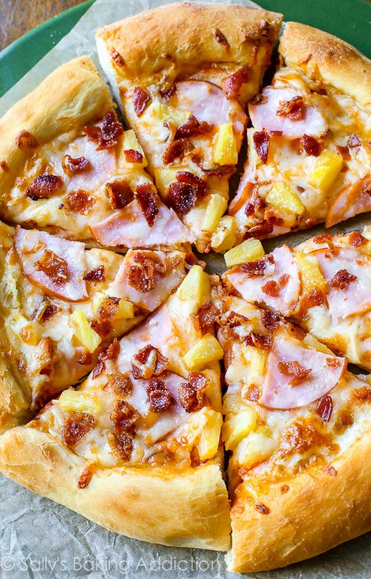

Hawaiian Pizza!

The Pizza My Wife Loves to Hate
My wife believes pineapple on pizza is a crime against humanity.
The recipe proves just how wrong she is (about this at least)!
Ingredients
- 1/2 recipe homemade pizza crust
- 1/2 cup (127g) pizza sauce (homemade or store-bought)
- 1 and 1/2 cups (6oz or 168g) shredded mozzarella cheese
- 1/2 cup (75g) cooked ham or Canadian bacon, sliced or chopped
- 1/2 cup (82g) pineapple chunks (canned or fresh)
- 3 slices bacon, cooked and crumbled
- Salty tears supplied by my wife for realizing she is so wrong
Steps
- Preheat the oven to 475°F (246°C). Cover the shaped dough lightly with plastic wrap and allow it to rest as the oven preheats.
- To prevent the pizza toppings from making your pizza crust soggy, brush the shaped dough lightly with olive oil. Using your fingers, push dents into the surface of the dough to prevent bubbling. Top the dough evenly with pizza sauce, then add the cheese, ham, pineapple, and bacon.
- Bake pizza for 12-15 minutes. Remove from the oven and top with fresh basil, if desired. Slice hot pizza and serve immediately.
- Cover leftover pizza tightly and store in the refrigerator. Reheat as you prefer. Baked pizza slices can be frozen up to 3 months.
- Make my wife cry tears of joy with how delicious this pizza is.